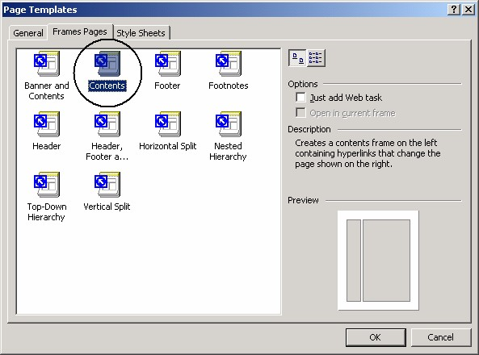
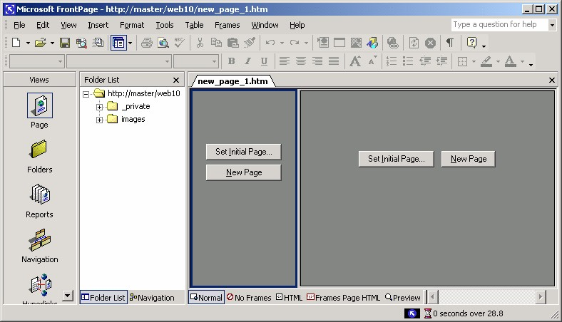
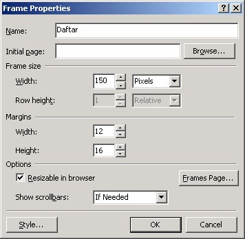
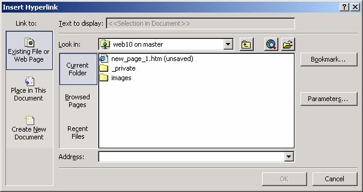
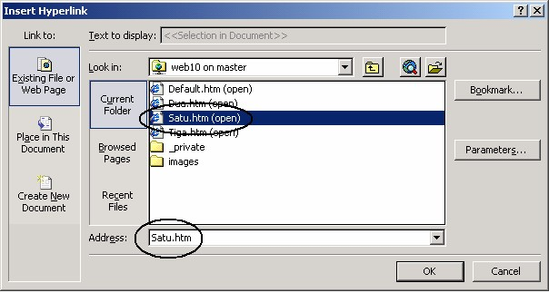
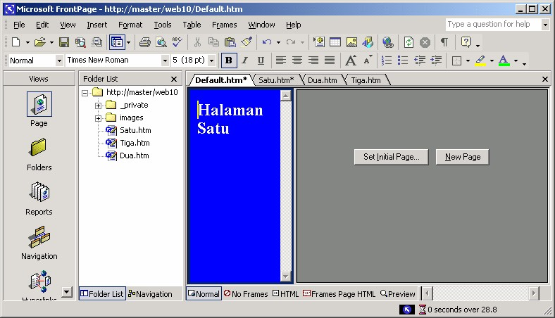
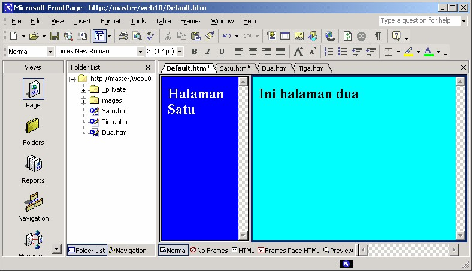
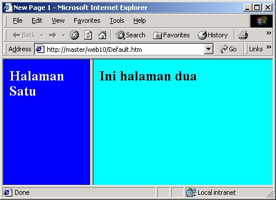

2 Membuat Frame
Membuat frame pada HTML dapat membingungkan, namun untungnya itu bukan
masalah bagi Anda sebab tidak menggunakan HTML. FrontPage akan melakukan
semua pembuatan kode HTML untuk Anda.
Tahapan pembuatan frame adalah:
1. Membuat halaman baru untuk digunakan sebagai frameset.
2. Membuat frameset, menggunakan template.
3. Membuat halaman pengisi.
4. Membuat link halaman pengisi frame.
2.1 Membuat frameset
Beginilah cara membuat frameset menggunakan template FrontPage XP:
1. Aktifkan perintah File ® New® Page or Web. Task pane akan muncul di
bidang kanan jika belum tampil.
2. Buatlah sebuah situs kosong baru bernama Web10.
3. Kemudian buatlah halaman baru yang akan dipasang dengan frameset. Pada task
pane klik icon Pages Templates, tampil kotak dialog Page Templates. Gambar
10.2.

Gambar 10.2 Kotak dialog Page Templates
4. Klik tab Frame Pages lalu pilih salah satu icon, misalnya Contents (Lihat
Gambar 10.2 di atas). Perhatikan hasil sementara-nya pada kotak Preview,
kemudian klik OK. Hasilnya berupa sebuah frameset dengan dua buah frame
pada halaman, seperti ditampilkan seperti Gambar 10.3.

Gambar 10.3 Frameset baru
5. Klik kanan frame sebelah kiri dan klik Properties. Muncul kotak dialog Frame
Properties

Gambar 10.4 Kotak dialog Frame Properties
6. Pada kotak isian Name tuliskan nama untuk frame kiri, misalnya Daftar. Lalu
klik tombol OK.
7. Klik kanan frame sebelah kanan dan klik Properties. Muncul kotak dialog
Frame Properties.
8. Pada kotak isian Name tuliskan nama untuk frame kanan, misalnya Isi. Lalu
klik tombol OK.
9. Simpanlah halaman sebagai Default.htm.
Kalau Anda perhatikan Gambar 10.3, tampak bahwa masing-masing frame memiliki
dua buah tombol, yaitu Set Initial Page, dan New Page.
• Tombol Set Initial Page untuk menentukan halaman awal yang harus
dibuka oleh frame. Sarananya adalah kotak dialog Insert Hyperlink.

Gambar 10.5 Kotak dialog Insert Hyperlink
• New Page untuk membuat halaman isi frame pada saat frameset dibuka.
2.2 Membuat halaman pengisi
Setelah frameset terbentuk, selanjutnya perlu membuat halaman pengisi.
1. Klik tombol Create a new normal page, terbentuk sebuah halaman.
2. Ubahlah warna latarbelakang halaman menjadi biru. Caranya: klik kanan
halaman, lalu klik Properties. Pada Background Color pilihlah biru, lalu OK.
3. Tuliskan teks: “Halaman Satu”, jangan lupa mengubah warna font menjadi
putih agar kontras dengan warna latar belakang.
4. Simpanlah sebagai Satu.htm.
5. Ulangi untuk pembuatan halaman Dua.htm dan Tiga.htm.
6. Simpanlah web, dengan File è Save.
2.3 Membuat link halaman pengisi
Kini saatnya menugaskan halaman agar mengisi frame yang disediakan. Langkah
yang diperlukan adalah:
1. Pada frame kiri (Daftar) klik tombol Set Initial Page…, muncul kotak dialog
Insert Hyperlink.

Gambar 10.6 Pemilihan Satu.htm sebagai pengisi frame Daftar
2. Klik icon halaman Satu.htm, lalu klik OK. Hasilnya pada halaman adalah:

Gambar 10.7 Halaman Satu.htm pada frame Daftar
3. Kemudian Anda bisa meneruskan dengan frame Isi. Klik kanan frame Isi lalu
pada kotak dialog Insert Hyperlink pilihlah icon Dua.htm, dan klik OK.
Hasilnya akan seperti berikut ini:

Gambar 10.8 Halaman Dua.htm mengisi frame Isi
4. Untuk mencoba tampilan halaman di browser, klik tombol Preview in browser.

Gambar 10.9 Tampilan halaman pada browser
Copyright © Herlan Lesmana
Created with the Freeware Edition of HelpNDoc: Easily create HTML Help documents